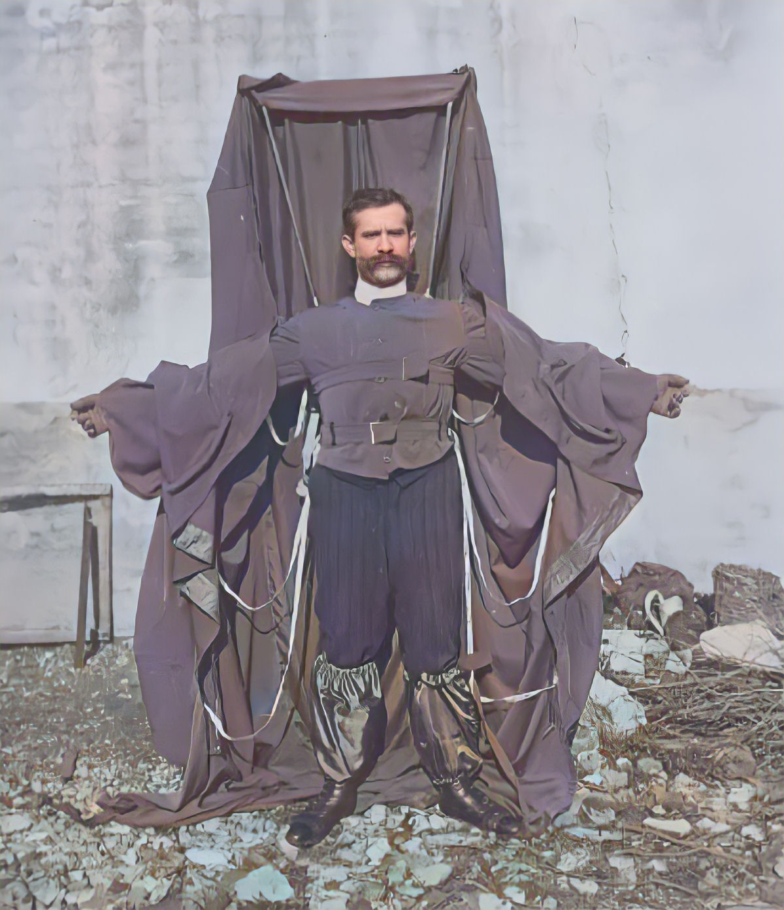
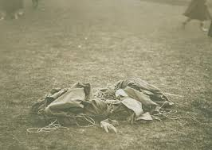
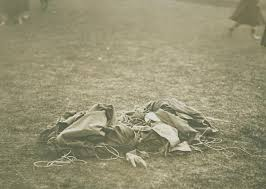
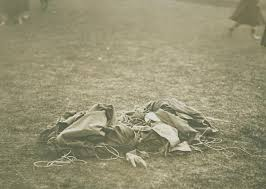

Franz Reichelt o Alfaite Voador
Nós já falamos em um par de oportunidades, a en passant, sobre o "pioneiro" Franz Reichelt, mas hoje vamos dedicar todo este artigo à sua história kafkiana e absurda. O acervo de filmes da British Pathé tem um vídeo assustador dele pulando para a morte da Torre Eiffel, em 1912. Nas cenas ele usa um traje enorme, precursor do wingsuit, enquanto permanece sorumbático de pé na saliência do primeiro nível da torre. Franz hesita por alguns longos segundos e então mergulha e cai direto no chão.
"Se um homem tiver uma tenda feita de linho, com as aberturas tapadas e com doze braços de largura e doze de profundidade, ele será capaz de se jogar de qualquer grande altura sem sofrer qualquer lesão", escreveu ele. O inventor croata Fausto Veranzio melhorou o design de Da Vinci substituindo o dossel por um pedaço de pano parecido com uma vela protuberante. Embora muitas fontes afirmem que Veranzio testou o paraquedas saltando da Catedral de St Martin em Bratislava, provavelmente nunca ocorreu. Foi só no final do século 18, quando um francês chamado Louis-Sébastien Lenormand deu o primeiro salto de paraquedas com sucesso e em seguida cunhou a palavra "parachute". Com o alvorecer da aviação e os trágicos acidentes que resultaram de desventuras aéreas, a necessidade de um paraquedas funcional foi fortemente sentida. Foi Charles Broadwick quem projetou o primeiro paraquedas dobrável que podia ser usado nas costas e desenrolado com a ajuda de uma linha estática presa ao balão ou avião. Em uma demonstração bem-sucedida em 1911, Charles jogou um manequim do topo da Torre Eiffel. A linha estática ficou tensa, puxou o paraquedas da mochila usada pelo manequim e então a linha se rompeu.

Nosso herói, Franz Reichelt também começou a trabalhar com paraquedas "vestíveis". Seus primeiros projetos usavam 6 metros quadrados de tecido e pesavam 70 kg pouco práticos. Todos os experimentos que ele conduziu com manequins do pátio de seu prédio na rua Gaillon falharam. No entanto, Franz perseverou e conseguiu reduzir o peso do traje para menos de 25 kg, dobrando a área de superfície do material usado. Mas seus testes ainda não tiveram sucesso e seus manequins invariavelmente caíam pesadamente no chão. O próprio Franz quebrou a perna ao tentar um salto de 10 metros sobre uma pilha de palha. Apesar de suas repetidas falhas, ele recusou-se a ver qualquer falha em seu projeto. Ao contrário, estava convencido de que, se pudesse aumentar a distância de lançamento, seu paraquedas seria um sucesso, pois daria aos flaps mais tempo para se desenrolarem adequadamente. Franz começou a solicitar às autoridades permissão para conduzir experimentos na Torre Eiffel, mas foi rejeitado a cada vez. Após um ano de tentativas, ele acabou conseguindo a permissão para fazê-lo, sob a condição de que o teste fosse realizado por um manequim. Franz concordou, mas esse nunca foi seu plano. No dia do teste, 4 de fevereiro de 1912, Franz chegou à Torre Eiffel vestido com seu traje de paraquedas que era, segundo a imprensa, "apenas um pouco mais volumoso que as roupas comuns". O traje não restringia os movimentos do usuário quando o paraquedas estava embalado, e abrir o paraquedas era tão simples quanto estender os braços para formar uma cruz com o corpo. Depois de estendida, a roupa lembrava uma espécie de manto com um vasto capuz de seda, segundo o jornal Le Temps.

Franz informou aos jornalistas reunidos que a área de superfície do projeto final era de 30 metros quadrados, uma grande melhoria em relação aos seus primeiros projetos. O alfaiate também afirmou que o traje estava pesando apenas 9 kg. Uma grande multidão se reuniu na base da Torre Eiffel para ver, o que eles presumiam, um manequim sendo jogado do primeiro nível do imponente marco. No entanto, quando Franz se apresentou vestindo um traje, ficou claro que sua intenção era diferente. Apesar de estar cercado por uma multidão de policiais e repórteres, poucos tomaram a iniciativa de detê-lo. Franz ocultou suas verdadeiros intenções até o último momento, o que pegou todos de surpresa, inclusive seus amigos, que tentaram dissuadi-lo. Eles até alegaram que ele teria amplas e novas oportunidades para provar seu invento, mas Franz simplesmente não quis ouvir ninguém. Quando questionado se pretendia usar cordas de segurança, ele respondeu: - "Quero tentar o experimento sozinho e sem truques, pois pretendo provar o valor de minha invenção." Para aquelas objeções técnicas urgentes, como a altura da queda ser muito curta para o paraquedas abrir totalmente, Franz respondeu com desdém:
De fato, após a morte de Franz, as autoridades ficaram cautelosas em conceder permissão para qualquer outro experimento com paraquedas usando a Torre Eiffel. Cada inscrição era examinada cuidadosamente e rejeitada se o solicitante já tivesse tentado fazer algo suspeito. Um inventor queria testar seu "paraquedas-helicóptero" e foi negado Franz acabou inspirando um videogame, uma obra de teatro e um curta-metragem que narra sua vida. Sua história sombria foi contada inúmeras vezes, mas nem sempre da maneira mais lisonjeira. Logo após o incidente, um jornalista sugeriu que apenas metade do termo "gênio-louco" se aplicava a Franz. O coitado também virou motivo de piada fácil e inclusive no fim do vídeo da British Pathé é possível apreciar uma situação bizarra de alguém medindo a cavidade deixada no chão pelo corpo de Franz, possivelmente para saber quem tinha ganhado alguma aposta. Franz Reichelt, que acabou apelidado de "Alfaiate Voador", ganharia com destaque e louvor o prêmio Darwin se este já existisse. A vida do Alfaiate Voador é contada em um curta metragem de Pablo Lopez Paredes, intitulada "Le Tailleur Austrichien", realizado em 1913. A equipe Zheit foi atrás desse curta metragem....confira, é bem interessante!!!

 

